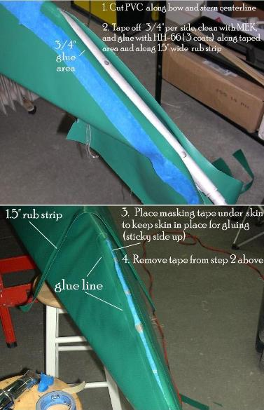

| Covering The Hull (5 of 6) | Menu Last Page Next Page |
|  |
Covering the stems (Rub Strip)
8. After cutting the skin along the centerline of the stern tube ( step 7) place masking tape along the stem allowing a 3/4" space for gluing on each side. Clean the area to be glued with MEK and apply 3 coats of vinyl cement allowing it to dry completely. Cut out a 1.5" wide rub strip and prep and glue it also. The rub strip should be at least 1 inches longer than the opening on either side.
9. After the glue has dried place several pieces of masking tape ( glue side up) inside the opening to hold the skin down for gluing.
|